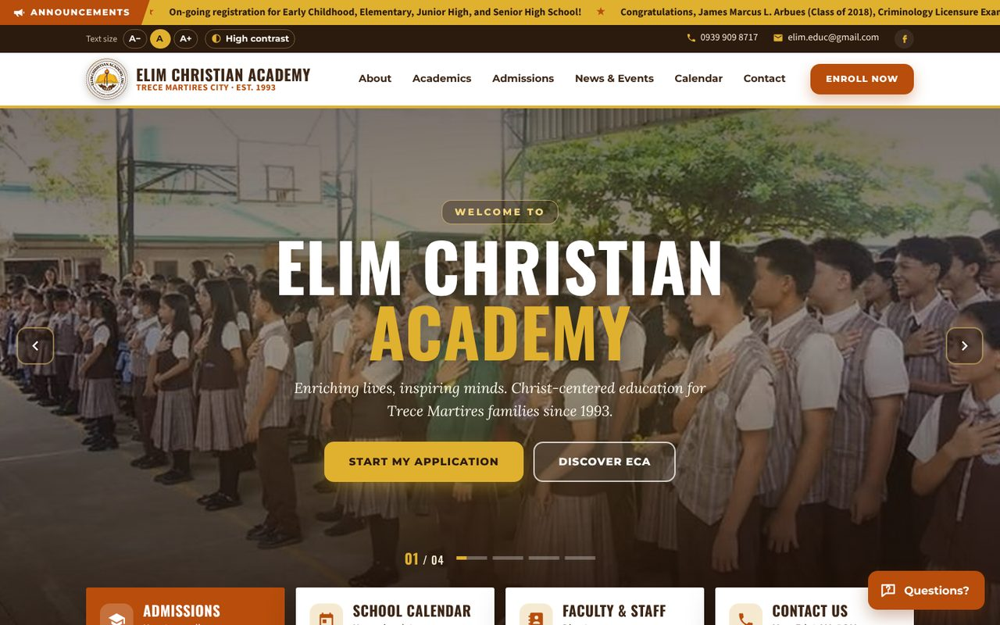
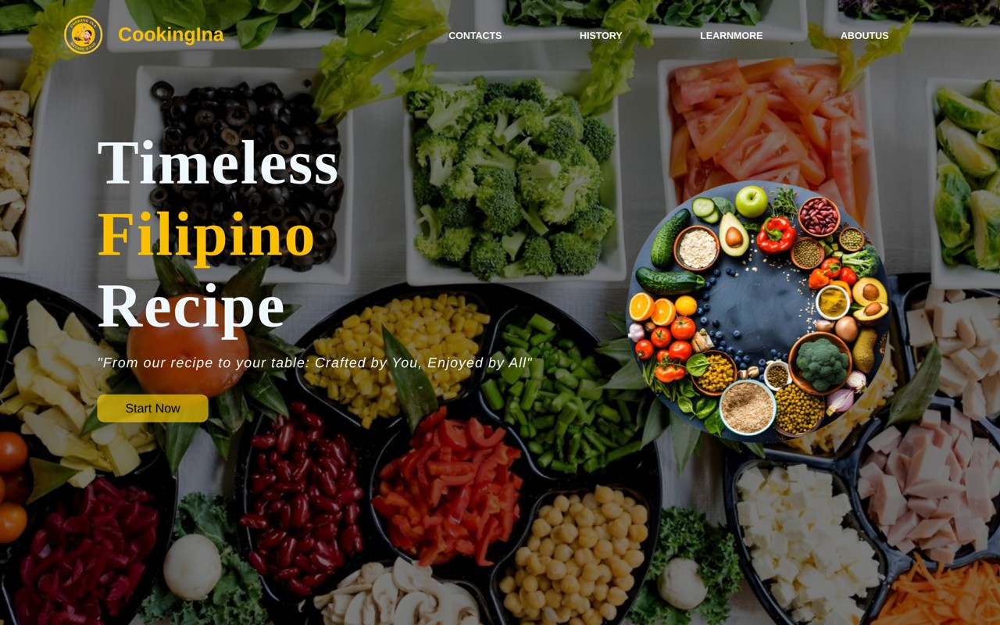
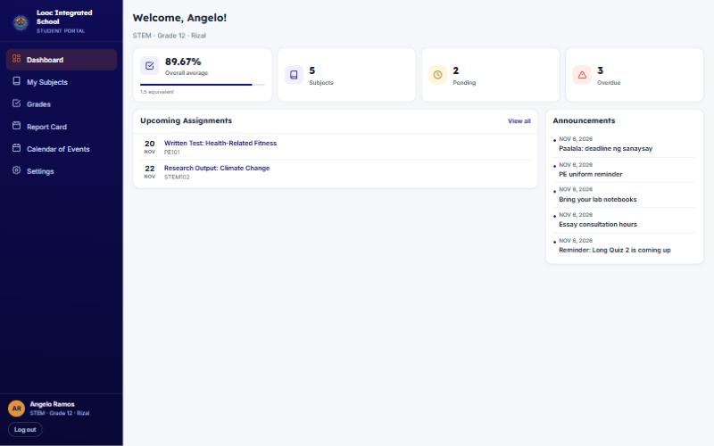

Available for full-time, part-time & freelance work
Web Developer
Rea‑Lyn
Macompas
I’m Rea-Lyn, an Information Technology student focused on software development, responsive web design, and building practical digital solutions.
Tech Stack
-
01 Languages & MarkupHTML5 CSS3 JavaScript PHP C# C#
-
02 Frameworks & LibrariesBootstrap .NET ASP.NET Core
-
03 DatabaseMySQL
-
04 Tools & PlatformsVS Code XAMPP Git & GitHub Figma
Selected Work
Projects
A few of the web applications I've built and shipped.


Testimonials
We care about our customer experience, too
Rea nailed the requirements on the first pass — communication was effortless throughout the project.
Capstone Adviser
Fast turnaround and she took every round of feedback in stride.
Group Project Partner
The e-commerce site she built for us made managing orders so much easier.
Business Owner, A&A Peanuts
Get In Touch
Contact me
I'm available for collaborations, freelance projects, or professional inquiries. Feel free to reach out — I'll respond as soon as possible.
- Block 8 Lot 16 Centennial De Calamba, Brgy. Looc, Calamba City, Laguna, 4027, Philippines
- 0907 843 4615
- realynmacompas@gmail.com